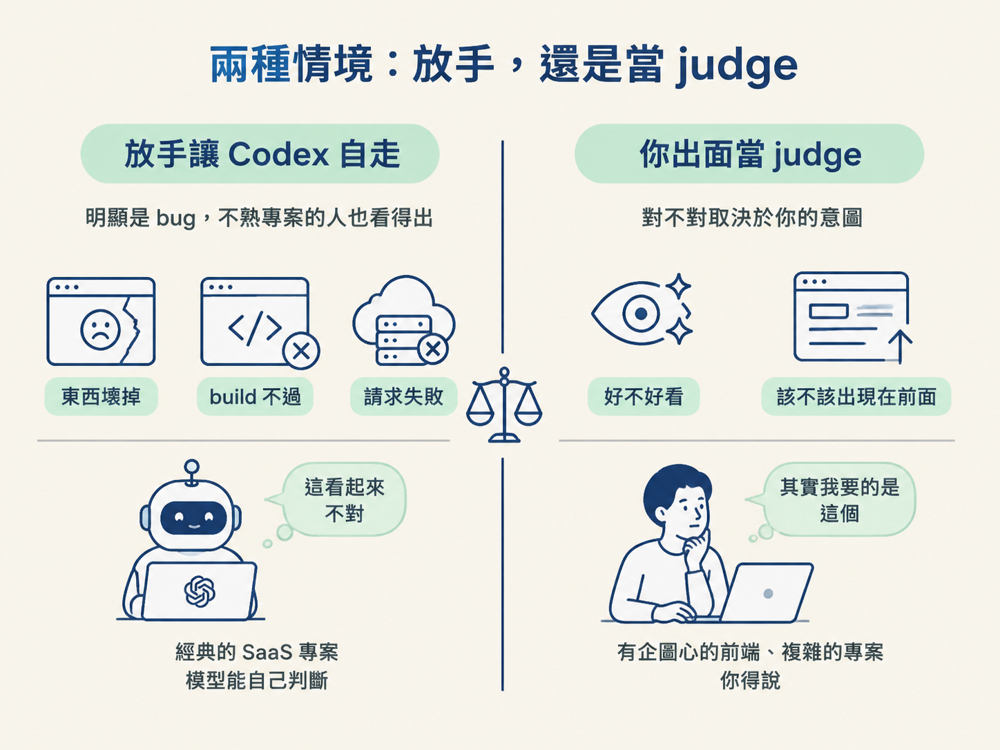
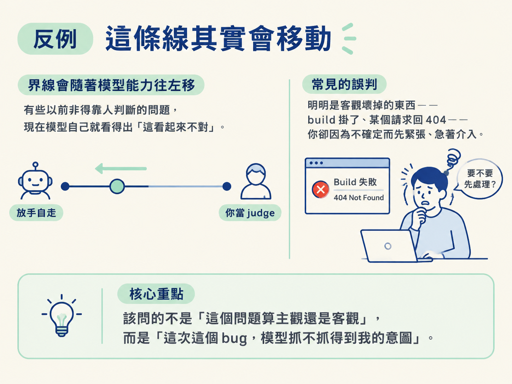

能判斷一個前端問題該放手讓 Codex 自走，還是得由你出面說「這才是我要的」。
你已經把 bug 報告送出去，Codex 也開始用 browser use 和 CDP 忙起來了。這時候真正的問題才浮上檯面：你要盯著螢幕看到它結束，還是可以去泡杯咖啡、回來再看結果？
全程盯著，你把工作交出去的意義就少了一半。完全不看，又怕它交回來的是一個「能跑，但就是不太對」的東西。除錯迴圈裡最吃經驗的一段就在這裡：判斷什麼時候該鬆手，什麼時候該由你出面。這一節不給你一個死板的百分比，而是給你一條能當場問自己的判準。
有人直接問講者：除錯迴圈裡有多少能自動化、多少需要人進迴圈？她的回答很誠實：大概一半一半。
有時候問題明顯到不行，Codex 自己就會發現、自己繞回去修。有時候，真的需要一個人站在旁邊當那個「判斷的人」，說一句「這個看起來不對」。
為什麼非人不可的那一半存在？因為「什麼才叫對」往往只存在你腦中。講者示範的 Tokyo bug 就是最好的例子：物件繞著地球轉，該在轉到正面時出現在球前面，而不是永遠躲在球後面。對她來說這是常識，因為「物件要繞著地球轉」的意圖是她下的。但對模型來說，要從「旋轉」推論到「所以轉到正面時要跑到前面」，並不容易。這種地方，就需要人補一句「我要的是這個」。
把判斷拆成兩欄來看，你的位置會立刻清楚：
| 放手讓 Codex 自走 | 你出面當 judge |
|---|---|
| 明顯是 bug，不熟專案的人也看得出 （東西壞掉、build 不過、請求失敗） | 對不對取決於你的意圖 （好不好看、該不該出現在前面） |
| 經典的 SaaS 專案 模型能自己判斷「這看起來不對」 | 有企圖心的前端、複雜的專案 你得說「其實我要的是這個」 |

左欄的共同點是：錯誤是客觀的。東西壞了就是壞了，跟你的品味、跟你心裡那張畫面都無關。所以模型自己察覺得出，也能繼續繞圈修下去。
右欄的共同點剛好相反：判斷標準只在你身上。畫面「差那麼一點」、動畫「感覺不對」，這些沒有客觀答案，只有你知道你想看到的樣子。
把上面那張表壓縮成兩個問題。每次卡住時，直接問自己：
如果你把判準記成「主觀＝人要管、客觀＝放手」，很快就會碰壁。這條線是會動的。
講者提到，模型越來越懂意圖、越來越懂真實世界。有些以前非得靠人判斷的問題，它現在自己就看得出「這看起來不對」。所以真正該問的不是「這個問題算主觀還是客觀」，而是：這一次的這個 bug，模型抓不抓得到我的意圖。
反過來也有常見的誤判：明明是客觀壞掉的東西（build 掛了、某個請求回 404），你卻因為不確定而先緊張、急著介入。這種根本不需要你當 judge，放手讓它跑，它自己會發現。

你可能會擔心：放手之後，它會不會很自信地說「修好了」，結果東西其實是壞的？
講者的經驗是這種事很少發生，甚至幾乎沒有。原因是它能自己 debug，而且在宣告完成前通常會自然地跑一次 build。真正比較容易出狀況的，只剩下需要視覺判斷的 bug，而那也正是你該當 judge 的場合。
除錯迴圈大約五五波是人機分工：客觀壞掉的問題放手讓 Codex 自走，因為它自己看得出、也修得動；取決於你意圖的問題則由你當 judge，補一句「我要的是這個」。這條線會隨模型能力移動，所以別問「主觀還是客觀」，要問「這次這個 bug，模型抓不抓得到我的意圖」。它會先跑 build 再回報，所以放手一般很安全；真正需要你的，是那些說不上來但就是「不太對」的視覺問題。
下次東西壞掉時，照這三句檢查表走：
走完這四節，你手上就有了一整套除錯迴圈：知道它為什麼是預設工作流、知道它用哪些工具看、能把 bug 寫成可重現的報告，也知道什麼時候該自己出面。下次別急著猜，先重現，然後跑一圈。